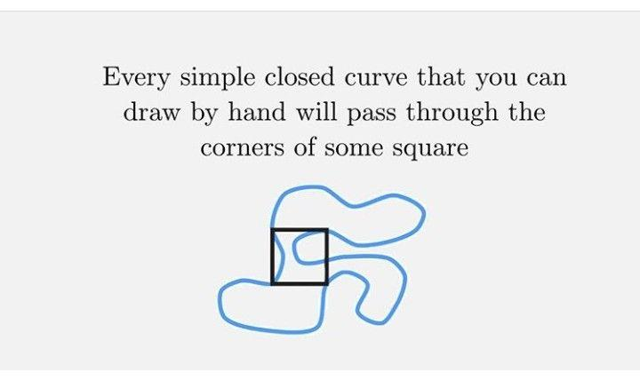

Mi-am propus să ofer în fiecare zi conținut nou: o recomandare de carte, de melodie, o biografie de autor, un citat, o glumă... Astăzi este rîndul:
Această conjectură afirmă că orice curbă plană închisă și simplă (adică fără autointersecții), numită pe scurt și curbă Jordan, trece prin toate cele 4 vîrfuri ale unui pătrat.
Conjectura a fost formulată în 1911 de matematicianul german Otto Toeplitz și, chiar dacă au fost obținute cîteva rezultate particulare, problema este încă nerezolvată.
Cîteva detalii mai tehnice se pot găsi pe pagina de Wikipedia care descrie problema (numind-o Problema pătratului înscris).
Într-o formă vizuală sugestivă, problema a fost readusă în atenție și de Fermat's Library.
